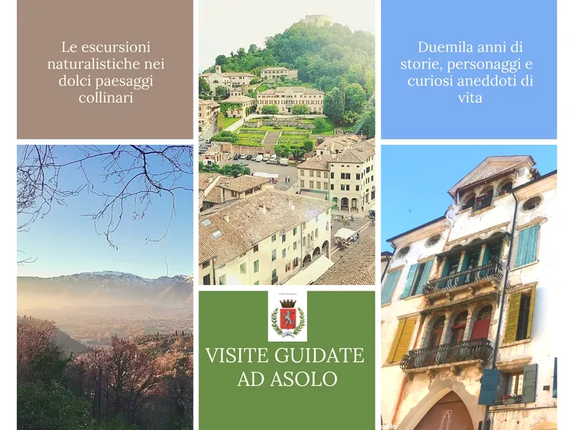

da sab 3 ott a sab 31 ott
Visite guidate e laboratori nel borgo di Asolo
Calendario delle visite guidate e dei laboratori organizzati dal Comune di Asolo e dal Museo Civico per scoprire la natura, la storia e gli eventi della perla della Marca Trevigiana.
 Indicazioni
Indicazioni
- Costi e prenotazioni
- Costo non indicato · Prenotazione non indicata
- Programma
- Programma da verificare. Apri la fonte ufficiale per orari e possibili aggiornamenti.
- In caso di maltempo
- Nessuna indicazione specifica pubblicata.
- Note
- Acquisito automaticamente dalla fonte.
L’EVENTO
Descrizione completa
Calendario delle visite guidate e dei laboratori organizzati dal Comune di Asolo e dal Museo Civico per scoprire la natura, la storia e gli eventi della perla della Marca Trevigiana.
Sabato 3 ottobre, ore 17:00 Sip and Stories - Le passioni di Eleonora Duse (con flash mob a cura di Accademia Duse) Visita guidata con aperitivo finale.
Domenica 4 ottobre, ore 16:00 Nelle Stanze della Duse Visita animata a cura di TeatrOrtaet.
Sabato 10 ottobre, ore 10:00-11:30-14:30-16:00 "Asolo Sotterranea - Visita speleologica all'acquedotto romano di Bot"
Domenica 11 ottobre, ore 16:00 "Scopri la collezione" Visita guidata del Museo Il Museo di Asolo ti invita a compiere un viaggio attraverso i secoli.
Sabato 17 ottobre, ore 16:00 – Il teatro prende vita: spettatori e spettacoli nella Asolo romana Relatrice: prof.ssa Alessia Zangrando (Università di Bologna)
Domenica 18 ottobre, ore 16:00 I luoghi di Freya Visita guidata alla scoperta di Freya Stark.
Domenica 25 ottobre, ore 10.30 La via dell’olio. Percorso tra gli olivi asolani. A cura dello storico locale Emmanuele Petrin Passeggiata tematica nell’ambito dell’iniziativa Merenda nell’Oliveta
Sabato 31 ottobre, ore 16:00 Caccia al tesoro di Halloween Laboratorio per bambini.
Per tutti gli eventi, la prenotazione è obbligatoria e sarà confermata con un numero minimo di partecipanti.
IL PROGRAMMA
Programma e orari
Appuntamenti raccolti dalle fonti elencate. Dove manca un orario, non è ancora disponibile in questa scheda.
Programma pubblicato
- 2026-10-03 — 2026-10-03 · 17:00:00
- 2026-10-04 — 2026-10-04 · 16:00:00
- 2026-10-10 — 2026-10-10 · 10:00:00
- 2026-10-11 — 2026-10-11 · 16:00:00
- 2026-10-17 — 2026-10-17 · 16:00:00
- 2026-10-18 — 2026-10-18 · 16:00:00
- 2026-10-25 — 2026-10-25 · 10:30:00
- 2026-10-31 — 2026-10-31 · 16:00:00
INFORMAZIONI UTILI
Prima di partire
- Controllare la fonte prima di partire.
ORGANIZZAZIONE